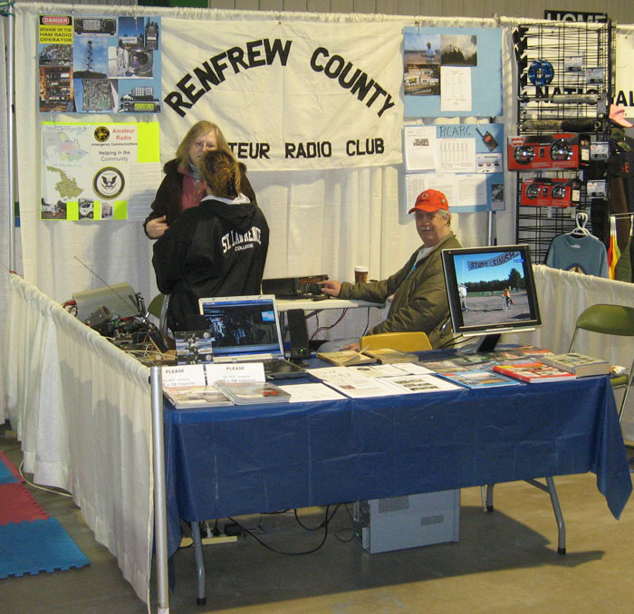

Renfrew County Amateur Radio Club and ARES at
the Petawawa Outdoor Show 2012
From Fri. May 27th through Sun. May 29th, RCARC and RCW-ARES shared a booth at the Petawawa Civic Centre for an Outdoor show.
This was our first attempt at a show like this from the Civic Centre.
We were led to believe that we would be able to put mag mount antennas on the steel roof of the building, but when we arrived to set up, the story had changed.
We put a mag mount 5/8 2 meter antenna on the roof of a porch over an emergency exit. The antenna was only a couple of feet from the steel East wall of the building, but it was useful for operating with the repeaters East of us.
We put a mag mount 20 M Hamstick on a fence rail which should have provided a reasonable ground plane, but it didn't work at all.
Toward the end of the show, we found that by disconnecting the coax shield at the mag mount, we could operate reasonably well on 40 M. There must have been a problem with the mag mount.
We have a permanent 2 M Ringo Ranger mounted on the building, but it was at the opposite corner from our booth and not at all accessible.
On display we had brochures, magazines, QSL cards and a slide show of past ARES activities, but what seemed to get the most attention was Doug Wheelock's
video of Ham Radio aboard the ISS which we had looping on a laptop.
The turnout to the show was disappointing with only about 1800 people for the 3 days, but we had 8 or 10 who showed an interest and may follow up.
Manning the booth we had: Marilyn VE3ZYY, Yvonne VE3RYA, Lewis VE3QJ, Tony VA3HWH, Richard VA3BIX, Rob VA3AGN, Bernie VA3SUR and Bob VE3YX.
The photo below shows Marilyn explaining something to a very interested prospective Ham while Lewis is relaxing after a frustrating bout with the non-functional Hamstick.
And - yes it was VERY CCCCCCCold in the building!

{kind=link}